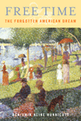
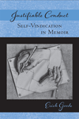
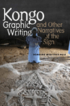
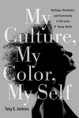

|
Accidental Immigrants and the Search for Home
Women, Cultural Identity, and Community
Kelley, Carol E.
Reveals how four very different women seek a sense of belonging, identity, and home through the lifelong process of immigration
190 pp • 6x9 • Spring 2013
paper 978-1-4399-0946-1
cloth 978-1-4399-0945-4
|

|
America's First Adventure in China
Trade, Treaties, Opium, and Salvation
Haddad, John R.
A lively account of the brash men who chased their American Dreams all the way to China
294 pp • 6x9 • Spring 2013
cloth 978-1-4399-0689-7
|

|
The Borders of Justice
edited by Balibar, Étienne, Sandro Mezzadra and Ranabir Samaddar
Exploring the limits of and contradictions of transitional justice
New in Paperback!
224 pp • 6x9 • Spring 2013
paper 978-1-4399-0686-6
|
|
"Building Like Moses with Jacobs in Mind"
Contemporary Planning in New York City
Larson, Scott
How Bloomberg's urban development relies on a blending of Moses and Jacobs
198 pp • 6x9 • Spring 2013
paper 978-1-4399-0970-6
cloth 978-1-4399-0969-0
|
|
Celebrating Debutantes and Quinceañeras
Coming of Age in American Ethnic Communities
Rodriguez, Evelyn Ibatan
How young women's coming of age rites cement community relations and reinforce ethnic identity
226 pp • 6x9 • Spring 2013
paper 978-1-4399-0628-6
cloth 978-1-59213-627-9
|
|
Citizenship and Governance in a Changing City
Somerville, MA
Ostrander, Susan A.
How community influences contribute to civic and political engagement in a city undergoing rapid change
190 pp • 6x9 • Spring 2013
paper 978-1-4399-1013-9
cloth 978-1-4399-1012-2
|

|
Claiming the Oriental Gateway
Prewar Seattle and Japanese America
Lee, Shelley Sang-Hee
How the interests of Seattle and Japanese Americans were linked in the processes of urban boosterism before World War II
New in Paperback!
272 pp • 6x9 • Spring 2013
paper 978-1-4399-0214-1 |
|
Critical Race Theory
The Cutting Edge
Third Edition
edited by Delgado, Richard and Jean Stefancic
A significant revision of a classroom mainstay for the twenty-first century
856 pp • 7x10 • Spring 2013
paper 978-1-4399-1061-0
cloth 978-1-4399-1060-3
|
|
Dangerous Knowledge
The JFK Assassination in Art and Film
With a New Preface by the Author
Simon, Art
On the historic 50th Anniversary, this reissued edition looks at the contemporary meanings and influences of images of the JFK assassination by filmmakers, photographers, and artists
298 pp • 5.25x9 • Spring 2013
paper 978-1-4399-1044-3
|
|
Disability and Passing
Blurring the Lines of Identity
edited by Brune, Jeffrey A. and Daniel J. Wilson
Why passing is a crucial concept in disability studies
216 pp • 5.5x8.25 • Spring 2013
paper 978-1-4399-0980-5
cloth 978-1-4399-0979-9
|
|
Dr. Radway's Sarsaparilla Resolvent
Kephart, Beth
A young adult novel set during the height of Philadelphia's industrial age
266 pp • 5.5x8.5 • Spring 2013
paper 978-0-9840429-6-8
|
|
Don't Call Me Inspirational
A Disabled Feminist Talks Back
Rousso, Harilyn
A disabled woman confronts body image, sexuality, bias, discrimination, and condescension as she fashions an independent and fulfilling life
224 pp • 5.25x9 • Spring 2013
paper 978-1-4399-0937-9
cloth 978-1-4399-0936-2
|
|
Down and Out in Los Angeles and Berlin
The Sociospatial Exclusion of Homeless People
von Mahs, Jürgen
An international account of homelessness, comparing Berlin and Los Angeles and the possibility of exiting homelessness in each city
208 pp • 6x9 • Spring 2013
cloth 978-1-4399-0826-6
|

|
Envisioning Emancipation
Black Americans and the End of Slavery
Willis, Deborah and Barbara Krauthamer
What freedom looked like for black Americans in the Civil War era
240 pp • 7x10 • Spring 2013
cloth 978-1-4399-0985-0
|
 |
Free Time
The Forgotten American Dream
Hunnicutt, Benjamin Kline
A magisterial overview of the history of the fight for leisure in the United States
250 pp • 6x9 • Spring 2013
paper 978-1-4399-0715-3
cloth 978-1-4399-0714-6
|
|
Homecourt
The True Story of the Best Basketball Team You've Never Heard Of
Needle, Larry
Foreword by Harlem Globetrotters Legend "Curly" Neal
How a small kid in South Philly embarked on a journey that would take him around the world with the Harlem Globetrotters
72 pp • 5.5x8.5 • Spring 2013
paper 978-0-98195-608-4
|

|
Hope Is Cut
Youth, Unemployment, and the Future in Urban Ethiopia
Mains, Daniel
A detailed look at young men in urban Ethiopia that reveals the impact of economic development and globalization
New in Paperback!
208 pp • 6x9 • Spring 2013
paper 978-1-4399-0480-0
|
|
Illegal Migrations and the Huckleberry Finn Problem
Park, John S.W.
If you knew a runaway slave or undocumented immigrant, would you tell?
278 pp • 6x9 • Spring 2013
paper 978-1-4399-1047-4
cloth 978-1-4399-1046-7 |
|
Intimacy across Borders
Race, Religion, and Migration in the U.S. Midwest
Juffer, Jane
How migration-especially by Latinos-can create new forms of intimacy across cultural, religious, and ethnic lines
204 pp • 5.5x8.25 • Spring 2013
paper 978-1-4399-1053-5
cloth 978-1-4399-1052-8
|
 |
Justifiable Conduct
Self-Vindication in Memoir
Goode, Erich
How memoirs justify deviant behavior from crime to sex to politics
224 pp • 6x9 • Spring 2013
paper 978-1-4399-1026-9
cloth 978-1-4399-1025-2
|
|
Just Queer Folks
Gender and Sexuality in Rural America
Johnson, Colin R.
Uncovering the history of gender and sexual nonconformity in rural America during the first half of the twentieth century
264 pp • 6x9 • Spring 2013
paper 978-1-4399-0998-0
cloth 978-1-4399-0997-3
|
 |
Kongo Graphic Writing and Other Narratives of the Sign
Martínez-Ruiz, Bárbaro
Tracing the history and development of visual traditions in the Kongo religions of Africa and Cuba (where it is known as Palo Monte)
240 pp • 7x10 • Spring 2013
cloth 978-1-4399-0816-7
|
|
Local Protest, Global Movements
Capital, Community, and State in San Francisco
Beitel, Karl
How San Francisco's housing protest movements help us understand global mobilization
230 pp • 6x9 • Spring 2013
paper 978-1-4399-0995-9
cloth 978-1-4399-0994-2
|
|
Mothers, Daughters, and Political Socialization
Two Generations at an American Women's College
Jenkins, Krista
Shedding new light on the political socialization of American women
178 pp • 6x9 • Spring 2013
paper 978-1-4399-0928-7
cloth 978-1-4399-0927-0 |
 |
My Culture, My Color, My Self
Heritage, Resilience, and Community in the Lives of Young Adults
Jenkins, Toby S.
An authentic picture of culture among young adults of color
204 pp • 6x9 • Spring 2013
paper 978-1-4399-0830-3
cloth 978-1-4399-0829-7 |
|
Pimping Fictions
African American Crime Literature and the Untold Story of Black Pulp Publishing
Gifford, Justin
The first literary and cultural history of African American crime literature, unveiling the untold story of black pulp publishing since the Civil Rights era
216 pp • 6x9 • Spring 2013
paper 978-1-4399-0811-2
cloth 978-1-4399-0810-5
|

|
The Politics of State Feminism
Innovation in Comparative Research
McBride, Dorothy E. and Amy G. Mazur
Addressing essential questions of women's movement activism and political change in Western democracies
New in Paperback!
318 pp • 6x9 • Spring 2013
paper 978-1-4399-0208-0
|

|
The Protestant Ethic Revisited
Gorski, Philip S.
Essays on the contradictory resurgence of religion and liberalism in the twenty-first century by one of the most important voices in the study of the sociology of religion
New in Paperback!
342 pp • 6x9 • Spring 2013
paper 978-1-4399-0190-8
|
|
Social Justice in Diverse Suburbs
History, Politics, and Prospects
edited by Niedt, Christopher
How the suburbs can give rise to campaigns for progressive change
276 pp • 6x9 • Spring 2013
paper 978-1-4399-1050-4
cloth 978-1-4399-1049-8 |
|
"We Live in the Shadow"
Inner-City KidsTell Their Stories through Photographs
Kaplan, Elaine Bell
The inner-city world of young at-risk teens though their powerful photos and stories
208 pp • 6x9 • Spring 2013
paper 978-1-4399-0790-0
cloth 978-1-4399-0789-4
|
|
We Shall Be Free!
Black Communist Protests in Seven Voices
Howard, Walter T.
In primary sources, unearthing the writings of African American Communists and the forgotten promise of radical politics
220 pp • 5.5x8.25 • Spring 2013
cloth 978-1-4399-0859-4 |

|
Young Men, Time, and Boredom in the Republic of Georgia
Frederiksen, Martin Demant
An in-depth look at urban youth in the Republic of Georgia offering new perspectives on how time and marginality are interlinked
214 pp • 6x9 • Spring 2013
cloth 978-1-4399-0918-8 |
Click here to download the catalog (pdf). |